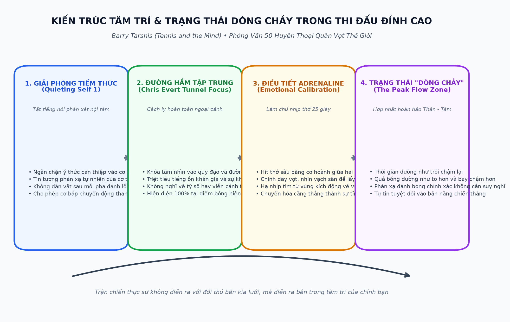
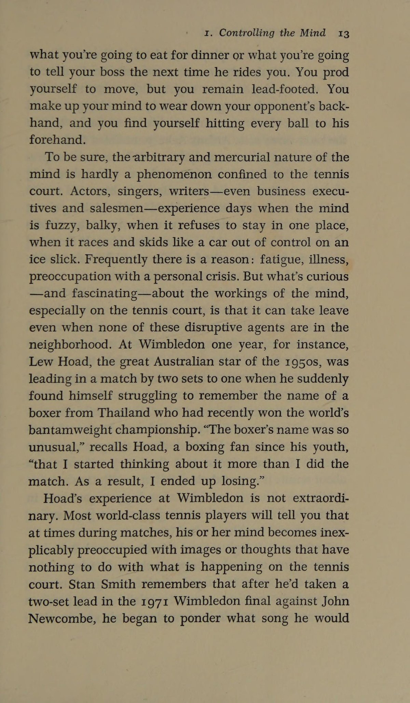
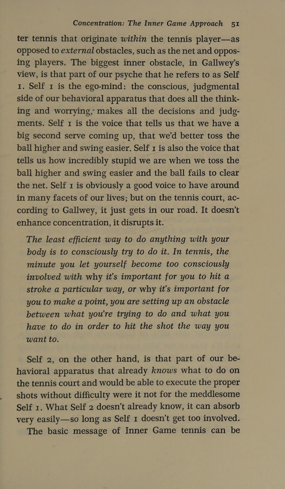
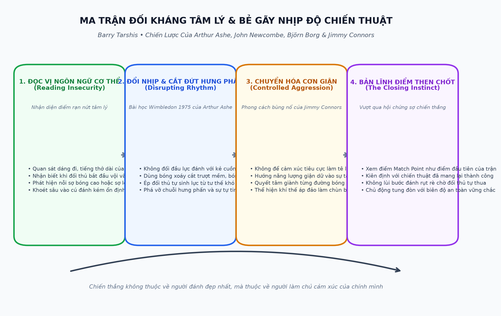
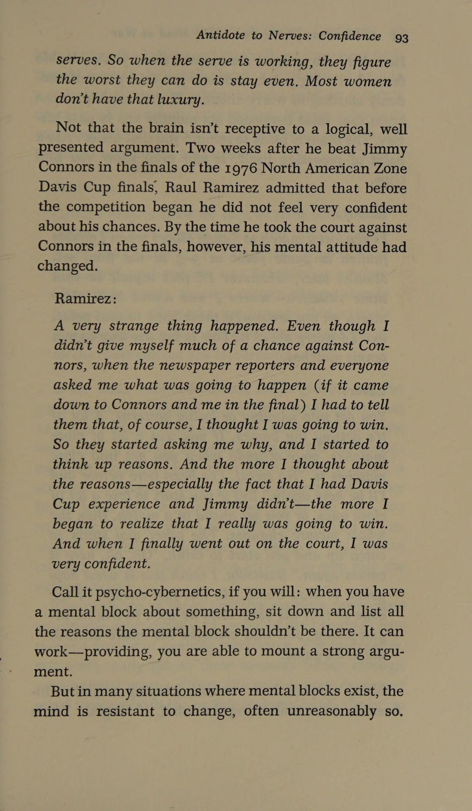
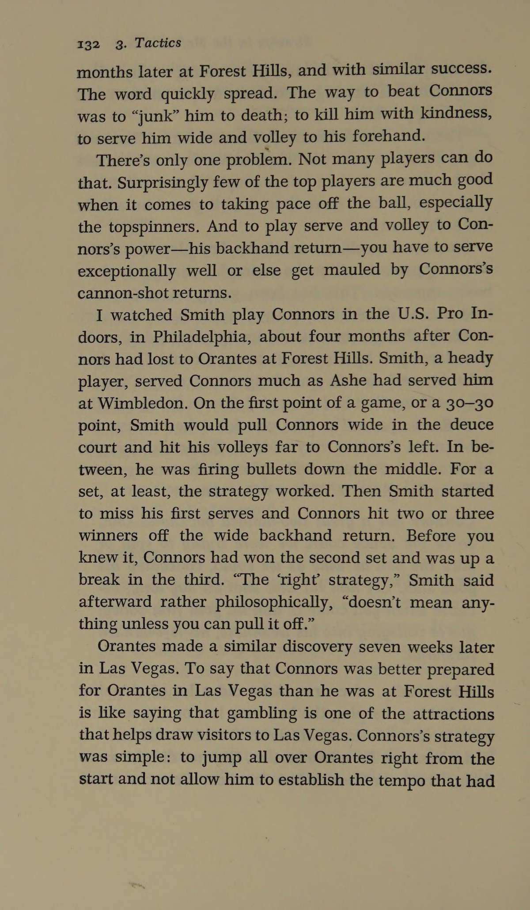
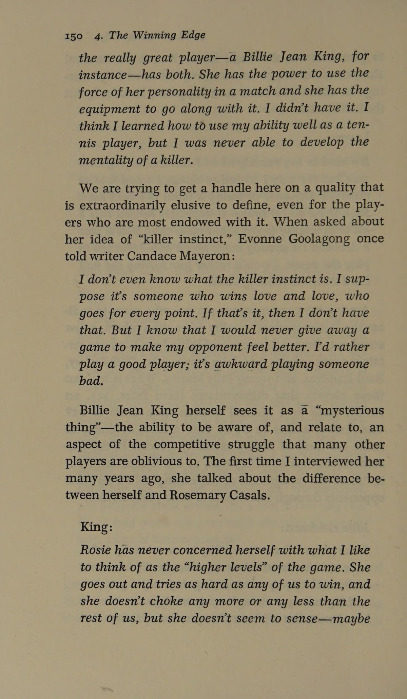

PHẦN 1: LÀM CHỦ TÂM TRÍ & NGHỆ THUẬT TẬP TRUNG TUYỆT ĐỐI
— Barry Tarshis (Tennis and the Mind)
Lời Dẫn Nhập: Cuộc Thám Hiểm Vào Chiều Sâu Tâm Trí Quần Vợt
Barry Tarshis là một trong những cây bút thể thao sắc sảo và uy tín nhất của tạp chí Tennis Magazine trong thập niên 1970 và 1980. Không dừng lại ở việc miêu tả những cú đánh cơ học bên ngoài, Tarshis đã dành nhiều năm phỏng vấn sâu hơn năm mươi huyền thoại quần vợt hàng đầu thế giới — từ Rod Laver, Ken Rosewall, Arthur Ashe, Stan Smith cho đến Chris Evert, Jimmy Connors và Björn Borg — để giải mã một câu hỏi muôn thuở: điều gì thực sự diễn ra trong tâm trí của một nhà vô địch khi họ đứng trước áp lực nghẹt thở?
Tác phẩm Tennis and the Mind ra đời như một chiếc cầu nối xuất sắc giữa lý thuyết tâm lý học thực nghiệm và thực tế chiến đấu khốc liệt trên sân quần vợt. Cuốn sách không đưa ra những lời khuyên sáo rỗng kiểu "hãy cố gắng hơn", mà bóc tách tỉ mỉ từng cơ chế hoạt động của não bộ: từ sự tập trung hẹp, cách thức vượt qua sự phán xét tiêu cực của bản ngã, cho đến việc thiết lập trạng thái thăng hoa tột đỉnh.
Chương 1: Bản Chất Của Sự Tập Trung (The Nature of Concentration)
Mọi huấn luyện viên đều hét lên với học trò: "Hãy tập trung vào bóng!". Nhưng chính xác thì "tập trung" nghĩa là gì?
Theo Barry Tarshis, bộ não con người không được thiết kế để duy trì sự chú ý liên tục ở cường độ cao trong suốt hai hoặc ba tiếng đồng hồ của một trận đấu. Những người cố gắng "gồng mình" tập trung không ngừng nghỉ thường rơi vào tình trạng kiệt quệ thần kinh chỉ sau một set đấu đầu tiên.
1. Tập Trung Thu Hẹp (Narrow External Focus)
Khóa chặt tầm nhìn thị giác vào các chi tiết cụ thể: đường may màu trắng của quả bóng nỉ, hướng xoay của quả bóng khi bay qua lưới, và khoảng cách giữa bóng với mặt đất khi chạm đất.
2. Bật - Tắt Nhịp Nhàng (The On-Off Switch)
Các nhà vô địch như Rod Laver hay Chris Evert chỉ kích hoạt sự tập trung tối đa trong khoảng 6 đến 8 giây khi điểm số đang diễn ra. Ngay khi bóng chết, họ lập tức "tắt" công tắc này để não bộ thư giãn trong 20 giây chuyển giao.
3. Triệt Tiêu Phán Xét Quá Khứ & Tương Lai
Sự mất tập trung xảy ra khi tâm trí bạn lang thang về quá khứ (dằn vặt vì cú đánh hỏng vừa rồi) hoặc phóng chiếu tới tương lai (lo sợ thua trận hoặc mơ tưởng về chiếc cúp vô địch).


Chương 2: Giải Mã "The Inner Game" & Bí Ẩn Về Cái Tôi Phán Xét
Vào giữa những năm 1970, phong trào The Inner Game of Tennis của W. Timothy Gallwey đã tạo nên một cơn địa chấn. Barry Tarshis đã dành nhiều chương phân tích sâu sắc hiện tượng này dưới góc nhìn của các tay vợt chuyên nghiệp.
| Thành Phần Tâm Trí | Bản Chất Tâm Lý | Hành Vi Điển Hình Trên Sân Đấu |
|---|---|---|
| Cái Tôi Ý Thức (Self 1 - The Teller) | Bản ngã biết nói, lý trí, thích phán xét, kiểm soát và luôn chỉ trích gay gắt mỗi khi có sai sót. | Liên tục lẩm bẩm tự trách: "Tại sao mày lại đánh quả ngớ ngẩn thế!", "Nhớ hạ đầu vợt!", "Đừng có vội!". Sự can thiệp bằng lời nói này làm căng cứng toàn bộ hệ thống cơ bắp. |
| Cái Tôi Tiềm Thức (Self 2 - The Doer) | Hệ thống thần kinh vận động tự động, cơ bắp, trực giác và bộ nhớ hình ảnh đã được tôi luyện qua hàng nghìn giờ tập. | Thực hiện các chuyển động mượt mà, phản xạ nhanh trong chớp mắt mà không cần suy nghĩ bằng ngôn từ. Nó tiếp nhận thông tin qua hình ảnh thị giác và cảm giác cơ bắp. |
Bí quyết thi đấu đỉnh cao của Ken Rosewall hay Arthur Ashe chính là học cách "làm câm lặng" Self 1. Khi Self 1 ngừng lải nhải chỉ trích, Self 2 sẽ được giải phóng hoàn toàn để thực hiện những đường bóng tuyệt mỹ với độ chính xác cơ học tự nhiên nhất.
Chương 3: Đường Hầm Tập Trung Của Chris Evert (The Ice Maiden Focus)
Chris Evert được mệnh danh là "Người băng" (The Ice Maiden) nhờ khả năng giữ bình tĩnh đến mức siêu phàm trên sân đấu. Trong cuộc trò chuyện với Barry Tarshis, Evert tiết lộ rằng bà đã xây dựng một "đường hầm thị giác vô hình" bao quanh bản thân:
- Cô lập khán đài: Evert không bao giờ nhìn lên khán đài, không nhìn ban huấn luyện và thậm chí hiếm khi nhìn thẳng vào mắt đối thủ giữa các pha bóng. Mắt bà luôn dán chặt vào dây vợt hoặc mặt sân.
- Quy trình cố định trước mỗi cú giao bóng: Đập bóng đúng ba nhịp, hít một hơi sâu, ngước mắt nhìn mục tiêu trên ô giao bóng đối phương, rồi mới tung bóng. Quy trình này hoạt động như một mỏ neo tâm lý đưa tâm trí về trạng thái cân bằng tuyệt đối.
- Chấp nhận lỗi lầm như một dữ liệu thống kê: Khi đánh một quả bóng ra ngoài, Evert không thể hiện bất kỳ sự tức giận nào trên nét mặt. Bà xem cú đánh hỏng đó đơn thuần là một thông số kỹ thuật cần điều chỉnh cho điểm tiếp theo, chứ không phải một thất bại về mặt nhân cách.
PHẦN 2: CẢM XÚC TRÊN SÂN: CHIẾN TRANH NỘI TÂM, NỖI SỢ & NGHẼN THỞ
— Barry Tarshis
Chương 4: Giải Phẫu Cơn Giận Trên Sân Đấu (The Anatomy of Court Anger)
Quần vợt là một trong số ít môn thể thao đối kháng nơi vận động viên hoàn toàn đơn độc. Không có đồng đội để chia sẻ gánh nặng, không có huấn luyện viên đứng bên đường biên chỉ đạo, và mọi sai lầm đều hiển hiện trần trụi trước mắt mọi người. Trong hoàn cảnh đó, cơn thịnh nộ rất dễ bùng phát.
Barry Tarshis chỉ ra hai hướng phản ứng trái ngược của cảm xúc giận dữ qua việc so sánh hai huyền thoại cùng thời:
- Cơn giận tự hủy diệt (Ilie Năstase): Nổi điên với trọng tài dây, tranh cãi gay gắt, chửi thề và đập vợt. Loại giận dữ này làm nhịp tim tăng vọt mất kiểm soát, phá vỡ hoàn toàn sự tập trung thị giác và dẫn đến những cú đánh mất phương hướng. Cơn giận này hướng ra bên ngoài nhưng lại thiêu rụi chính bản thân người chơi.
- Cơn giận được khai thác thành động lực (Jimmy Connors): Connors cũng nổi nóng và thể hiện sự ngỗ ngược, nhưng ông biết cách chuyển hóa ngọn lửa giận dữ đó thành sự quyết tâm tàn nhẫn. Thay vì tự thương hại bản thân, Connors dồn toàn bộ năng lượng đó vào đôi chân, chạy đuổi theo từng quả bóng với tốc độ điên cuồng và nghiền nát đối thủ bằng ý chí chiến đấu sắt đá.

Chương 5: Hiện Tượng "Nghẹn Thở" (The Choke) & Cơ Chế Sinh Học
Hiện tượng nghẽn thở tâm lý không phải là sự yếu đuối về mặt đạo đức; nó là một phản ứng sinh học tự nhiên của cơ thể khi đối mặt với mối đe dọa sinh tồn (Fight-or-Flight Response):
| Biểu Hiện Thể Chất Khi Choking | Cơ Chế Sinh Lý Học | Hậu Quả Cơ Học Lên Cú Đánh |
|---|---|---|
| Cánh tay cứng đờ như gỗ | Adrenaline tiết ra quá mức làm co thắt các nhóm cơ đối kháng ở cẳng tay và vai. | Đà vung vợt bị rút ngắn một nửa, biên độ tiếp xúc bóng bị co rút khiến bóng rúc sâu vào chân lưới. |
| Thở dốc, nông và gấp gáp | Lồng ngực co lại, hơi thở chỉ luẩn quẩn ở vùng cổ họng thay vì đi sâu xuống cơ hoành bụng. | Não bộ thiếu oxy tức thời, làm suy giảm khả năng phán đoán cự ly và căn thời gian tiếp xúc bóng. |
| Đôi chân "bị chôn chặt" xuống đất | Trọng tâm cơ thể bị khóa cứng, các cơ bắp chân căng cứng mất khả năng bật nảy linh hoạt. | Không thể thực hiện bước chia tách (split-step), luôn đến bóng muộn và phải với người cứu bóng trong tuyệt vọng. |
| Tầm nhìn hình ống (Tunnel Vision) | Đồng tử giãn nở cực độ dưới áp lực lo âu khiến người chơi mất hoàn toàn nhận thức không gian xung quanh. | Không nhìn thấy khoảng trống trên sân đối phương, đánh bóng thẳng vào vị trí đối thủ đang đứng chờ sẵn. |
Chương 6: Nỗi Sợ Chiến Thắng Kỳ Lạ (The Fear of Winning)
Một trong những phát hiện tâm lý sâu sắc nhất mà Barry Tarshis đúc kết từ các cuộc phỏng vấn là: rất nhiều tay vợt không sợ thất bại — họ thực sự sợ hãi khoảnh khắc chiến thắng.
Tại sao một tay vợt đang dẫn trước 5-2 hoặc 40-0 lại đột ngột sụp đổ?
- Nỗi sợ gánh nặng kỳ vọng: Khi bạn thắng một trận đấu lớn, bạn tự động nâng mức kỳ vọng của bản thân và mọi người lên một tầm cao mới. Tiềm thức của bạn lo sợ rằng nếu thắng hôm nay, bạn sẽ phải chịu đựng áp lực duy trì phong độ đó trong những trận đấu tiếp theo.
- Cảm giác tội lỗi vô thức: Nhiều người chơi có xu hướng ngại ngùng khi phải đánh bại một người bạn thân, một người đàn anh tôn kính hoặc một đối thủ được đám đông yêu mến. Tiềm thức của họ tự động nương tay để tránh cảm giác bị ghét bỏ.
- Hội chứng "Bảo Toàn Tỷ Số": Khi nhìn thấy đích đến quá gần, người chơi đột ngột từ bỏ lối đánh tấn công uy dũng đã giúp họ dẫn trước. Họ chuyển sang lối đánh rụt rè, chỉ dám đẩy nhẹ bóng qua lưới với hy vọng đối phương sẽ tự đánh hỏng. Đây chính là chiếc vé nhanh nhất dẫn tới sự thất bại.
Chương 7: Phương Pháp Tự Trấn Tĩnh Của Các Đại Kiện Tướng
Làm thế nào mà Arthur Ashe hay John Newcombe có thể đứng vững trước những thời khắc quyết định của trận chung kết Grand Slam?
Kỹ Thuật Thở Cơ Hoành 4-4-4
Hít vào thật sâu bằng mũi trong 4 giây đẩy phồng bụng, giữ hơi trong 4 giây, và thở từ từ qua miệng trong 4 giây. Động tác này kích hoạt hệ thần kinh phó giao cảm, lập tức hạ nhịp tim xuống 15-20 nhịp mỗi phút.
Quy Trình 20 Giây Phục Hồi
Sau mỗi điểm số căng thẳng: quay lưng về phía lưới, đi bộ chậm rãi về phía vạch baseline, chỉnh lại từng sợi cước trên mặt vợt, và chỉ quay lại khi tâm trí đã hoàn toàn lắng đọng.
Tập Trung Vào Quy Trình Thay Vì Tỷ Số
Tại điểm Match Point, đừng nghĩ về chiếc cúp hay chiến thắng. Hãy tự nhủ: "Tung bóng ở vị trí 1 giờ, khuỵu gối, và đánh bóng vào góc xa bên trái". Khi tâm trí bận rộn với các nhiệm vụ kỹ thuật cụ thể, nỗi sợ hãi sẽ không còn chỗ để chen chân.
PHẦN 3: CHIẾN THUẬT DƯỚI LĂNG KÍNH TÂM LÝ & ĐÒN BẺ GÃY NHỊP ĐỘ
— Arthur Ashe (Trò chuyện cùng Barry Tarshis)
Chương 8: Đọc Vị Điểm Yếu Tâm Lý Của Đối Phương (Reading Opponent Psychology)
Phần lớn người chơi chỉ chăm chú quan sát cú thuận tay hay cú trái tay của đối phương xem họ đánh mạnh hay yếu. Những bậc thầy chiến thuật như Rod Laver hay Ken Rosewall quan sát những tín hiệu hoàn toàn khác:
1. Ngôn Ngữ Cơ Thể Sau Điểm Thua
Đối thủ có buông thõng hai vai, cúi gằm mặt xuống đất hay lắc đầu thở dài không? Đó là dấu hiệu cho thấy họ đang bắt đầu tự trách mình và rơi vào vòng xoáy nghi ngờ năng lực bản thân.
2. Nhịp Điệu Chuẩn Bị Giao Bóng
Khi một đối thủ bắt đầu giao bóng vội vàng, không buồn đập bóng lấy nhịp, điều đó chứng tỏ họ đang rất hoảng loạn và muốn điểm số kết thúc thật nhanh để trốn chạy cảm giác đau đớn.
3. Nỗi Sợ Không Gian Sân Đấu
Quan sát vị trí đứng của đối thủ: họ có xu hướng lùi quá sâu sau vạch baseline vì sợ bóng sâu không? Hay họ đứng chết trân ở giữa sân vì sợ bị lốp bóng qua đầu? Hãy khai thác triệt để những vùng không gian họ muốn trốn tránh.


Chương 9: Bài Học Thế Kỷ: Arthur Ashe Đánh Bại Jimmy Connors Tại Wimbledon 1975
Trong lịch sử quần vợt thế giới, không có trận đấu nào minh họa cho chiến thắng của tâm lý chiến và chiến thuật trí tuệ rõ nét hơn trận chung kết đơn nam Wimbledon năm 1975.
Vào thời điểm đó, Jimmy Connors 22 tuổi đang ở đỉnh cao phong độ hủy diệt, là đương kim vô địch và vừa nghiền nát mọi đối thủ trên đường vào chung kết mà không thua một set nào. Connors thi đấu với lối đánh đập bóng bạt phẳng sấm sét từ cuối sân, mượn toàn bộ lực đánh của đối phương để trả ngược lại với tốc độ kinh hoàng. Mọi chuyên gia đều dự đoán một chiến thắng áp đảo cho Connors trước một Arthur Ashe đã 31 tuổi.
| Yếu Tố Chiến Thuật | Cách Tiếp Cận Thông Thường Của Đối Thủ | Kiệt Tác Chiến Thuật Tâm Lý Của Arthur Ashe |
|---|---|---|
| Tốc độ bóng trả lại | Cố gắng đánh bóng thật mạnh để đọ sức cơ bắp với Connors. | Hoàn toàn triệt tiêu lực đánh: Ashe chỉ cắt bóng trượt (Slice) thật nhẹ, bổng và bay lơ lửng với tốc độ cực chậm. Connors không có lực để mượn và buộc phải tự tạo lực từ những tư thế vụng về. |
| Góc đánh và quỹ đạo | Đánh bóng chéo sân tốc độ cao vào vùng đón quen thuộc của Connors. | Ép bóng xoáy trượt thấp sát mặt cỏ trơn trượt của Wimbledon, buộc Connors phải gập lưng sâu khiến những cú bạt phẳng ưa thích bay thẳng vào lưới. |
| Cú giao bóng chiến thuật | Cố gắng phát bóng ăn điểm trực tiếp (Aces) bằng sức mạnh tối đa. | Giao bóng xoáy slice góc rộng ra mang sân (Serve-and-Volley) kéo Connors văng ra ngoài khán đài, sau đó bắt volley nhẹ nhàng vào góc sân trống thênh thang. |
| Thái độ tâm lý thi đấu | Bị cuốn vào những màn la hét khiêu khích và năng lượng cuồng bạo của Connors. | Giữ vẻ mặt tĩnh lặng như một bức tượng Phật, ngồi thiền nhắm mắt trong các quãng nghỉ giữa set, khiến Connors rơi vào trạng thái bế tắc và tự sụp đổ. |
Kết quả: Arthur Ashe đã giành chiến thắng ngoạn mục 6-1, 6-1, 5-7, 6-4, tạo nên một trong những cú sốc lớn nhất trong lịch sử thể thao. Trận đấu này là minh chứng đanh thép cho triết lý của Barry Tarshis: "Bộ óc chiến thuật và sự làm chủ cảm xúc luôn có thể khuất phục sức mạnh cơ bắp đơn thuần."
Chương 10: Hai Quy Tắc Vàng Về Thay Đổi Kế Hoạch Trận Đấu
Khi đứng trên sân, người chơi thường rơi vào hai thái cực sai lầm: hoặc quá bảo thủ không chịu đổi chiến thuật dù đang thua đậm, hoặc hoảng loạn thay đổi liên tục khiến bản thân mất phương hướng. Tarshis đúc kết hai nguyên tắc bất biến:
- Nếu bạn đang thắng, đừng bao giờ thay đổi lối chơi (Never change a winning game): Cho dù lối đánh đó trông có vẻ xấu xí, buồn ngủ hay đơn điệu đến đâu, chừng nào nó còn mang lại điểm số, hãy tiếp tục thực hiện nó một cách lạnh lùng. Rất nhiều tay vợt đã tự dâng chiến thắng cho đối thủ chỉ vì muốn biểu diễn những cú đánh đẹp mắt khi đang dẫn điểm.
- Nếu bạn đang thua cách biệt, phải thay đổi ngay lập tức (Always change a losing game): Đừng hy vọng đối thủ sẽ đột nhiên đánh dở đi. Nếu những cú đánh bạt bóng từ cuối sân của bạn đang bị đối thủ khai thác dễ dàng, hãy lập tức đổi sang cắt bóng xoáy thấp, lên lưới bất ngờ, hoặc lốp bóng bổng đảo nhịp. Hãy buộc đối thủ phải giải quyết một bài toán hoàn toàn mới.
PHẦN 4: LỢI THẾ CHIẾN THẮNG, BẢN NĂNG SÁT THỦ & ĐAM MÊ SUỐT ĐỜI
— Barry Tarshis
Chương 11: Khát Khao Chiến Đấu & Bản Năng Sát Thủ (The Killer Instinct)
Trong thế giới quần vợt chuyên nghiệp, khoảng cách kỹ thuật giữa một tay vợt xếp hạng 1 thế giới và một tay vợt xếp hạng 50 thường là rất mong manh. Cả hai đều có thể tung ra những cú giao bóng trên 200 km/h và những cú thuận tay chuẩn mực. Sự khác biệt mang tính quyết định nằm ở cái mà các chuyên gia gọi là "Lợi thế chiến thắng" (The Winning Edge).
Bản năng sát thủ (Killer Instinct) thường bị hiểu nhầm là sự độc ác hay kiêu ngạo. Nhưng trong phân tích của Barry Tarshis, bản năng sát thủ là sự tôn trọng cao nhất dành cho đối thủ và môn thể thao:
- Không bao giờ nới lỏng khi dẫn trước: Khi dẫn 5-0 hoặc 40-0, tay vợt có bản năng sát thủ không biểu diễn kỹ xảo hay tỏ ra khinh địch. Họ duy trì sự tập trung tàn nhẫn để khép lại điểm số một cách nhanh nhất có thể.
- Không bao giờ để đối thủ le lói hy vọng: Trong quần vợt, nếu bạn để đối thủ cứu được một vài điểm số then chốt, ngọn lửa tự tin của họ có thể bùng cháy dữ dội và xoay chuyển hoàn toàn cục diện trận đấu.
- Đón nhận áp lực như một đặc ân (Pressure is a Privilege): Như huyền thoại Billie Jean King từng chia sẻ, áp lực chỉ xuất hiện khi bạn đang thi đấu ở những thời khắc quan trọng nhất. Hãy học cách yêu thích cảm giác hồi hộp đó thay vì tìm cách trốn chạy nó.

Chương 12: Xây Dựng Sự Tự Tin Không Thể Lay Chuyển (Unshakeable Confidence)
Nhiều người chơi nhầm lẫn giữa sự tự tin với cảm giác hưng phấn tạm thời khi đánh trúng tay. Barry Tarshis chỉ ra cách thức xây dựng sự tự tin bền vững dựa trên ba trụ cột tâm lý:
1. Tách Rời Giá Trị Bản Thân Khỏi Tỷ Số
Bạn là một con người hoàn chỉnh với gia đình, công việc và các giá trị sống cao đẹp. Một trận thua trên sân tennis chỉ là một trận thi đấu thể thao, nó hoàn toàn không định nghĩa giá trị nhân cách hay năng lực sống của bạn.
2. Kỹ Thuật Hình Dung Tích Cực (Mental Imagery)
Dành 10 phút mỗi tối trước khi ngủ để nhắm mắt và tưởng tượng lại những cú đánh hoàn hảo nhất của bạn trong quá khứ. Não bộ không phân biệt được giữa trải nghiệm thực tế sống động và hình ảnh tưởng tượng chi tiết.
3. Chấp Nhận Yếu Tố Ngẫu Nhiên Của Thể Thao
Gió giật, bóng chạm mép lưới nảy sang sân, hay quyết định sai lầm của trọng tài là những biến số khách quan nằm ngoài tầm kiểm soát của bạn. Hãy buông bỏ những thứ bạn không thể điều khiển để dồn 100% năng lượng vào những thứ bạn có thể làm chủ.
Chương 13: Nghi Thức Trước Trận Đấu Của Các Huyền Thoại (Pre-Match Rituals)
Nghi thức thi đấu là công cụ mạnh mẽ nhất giúp người chơi chuyển đổi từ trạng thái lo âu đời thường sang trạng thái chiến đấu đỉnh cao:
| Giai Đoạn Chuẩn Bị | Nghi Thức Thực Hiện | Hiệu Ứng Tâm Lý Đạt Được |
|---|---|---|
| 2 Giờ trước trận đấu | Ăn nhẹ bữa ăn giàu năng lượng dễ tiêu, kiểm tra cẩn thận túi đựng đồ, độ căng dây của từng cây vợt và quấn lại cán vợt mới tinh. | Tạo cảm giác làm chủ hoàn toàn các yếu tố vật chất, loại bỏ sự bất an về trang thiết bị thi đấu. |
| 30 Phút trước trận đấu | Khởi động thể lực nhẹ nhàng, nhảy dây, kéo giãn cơ động học và lắng nghe một bản nhạc yêu thích có nhịp điệu ổn định. | Đưa nhịp tim lên mức thi đấu tối ưu, đánh thức hệ thần kinh phản xạ vận động. |
| 5 Phút khởi động trên sân | Không cố đánh ăn điểm đối phương. Tập trung cảm nhận mặt vợt tiếp xúc bóng êm ái, quan sát độ nảy của mặt sân và hướng gió. | Lập trình lại thị giác và đôi tay, tạo sợi dây liên kết thân thuộc với không gian sân đấu. |

Chương 14: Duy Trì Niềm Vui & Đam Mê Quần Vợt Suốt Cả Đời Người
Sau tất cả những phân tích chiến thuật và áp lực điểm số, Barry Tarshis kết thúc tác phẩm bằng một thông điệp nhân văn sâu sắc: "Quần vợt không phải là một chiến trường sinh tử; nó là một trò chơi kỳ diệu được sáng tạo ra để mang lại niềm vui, sức khỏe và sự kết nối giữa những tâm hồn yêu thể thao."
Khi bạn bước ra sân với một tâm thế cởi mở, không sợ hãi sai lầm, biết trân trọng từng đường bóng đẹp của cả bản thân lẫn đối thủ, bạn sẽ tìm thấy một trạng thái tự do nội tâm tuyệt đối. Đó chính là khoảnh khắc tâm trí bạn thực sự hòa làm một với môn thể thao quý tộc này.